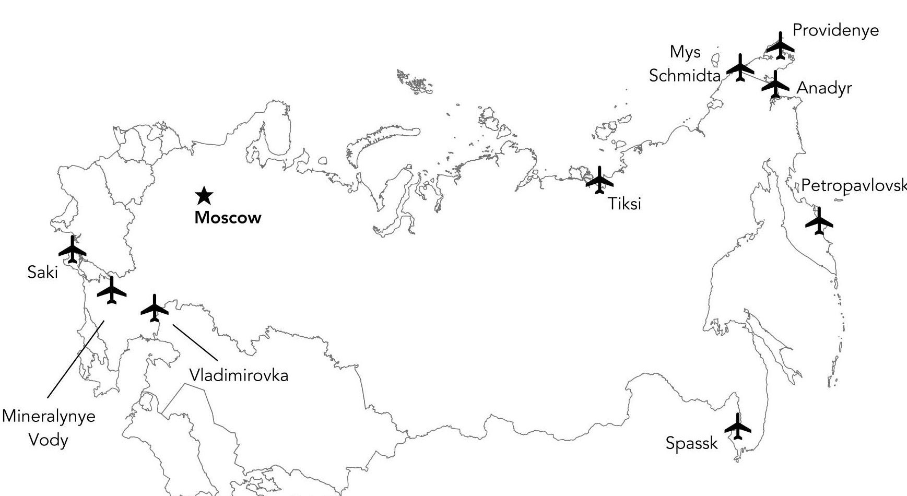
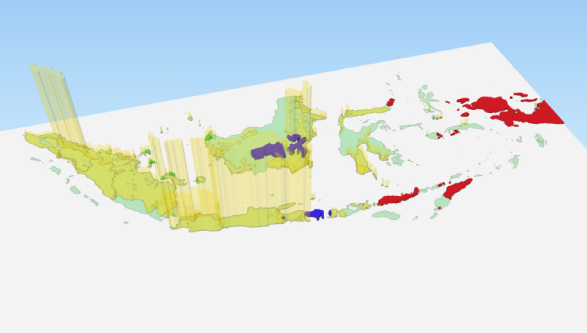
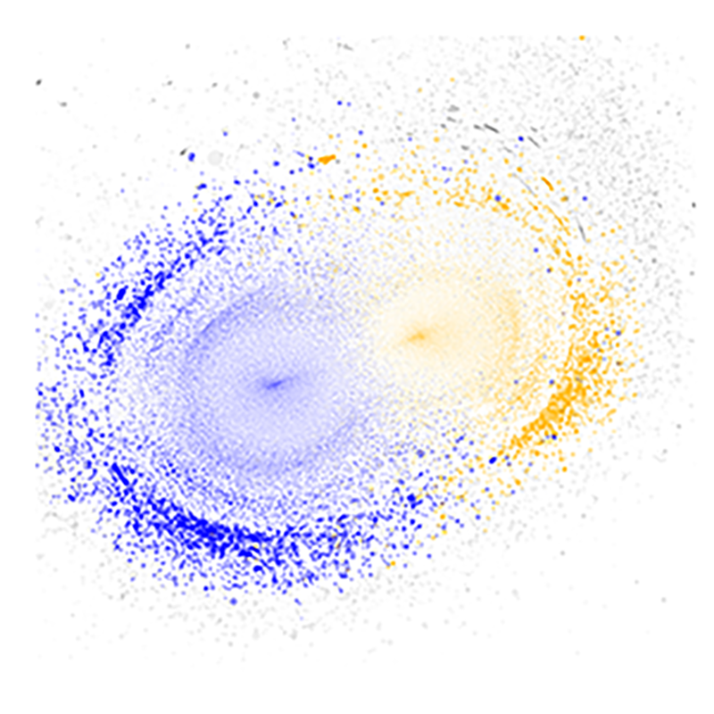
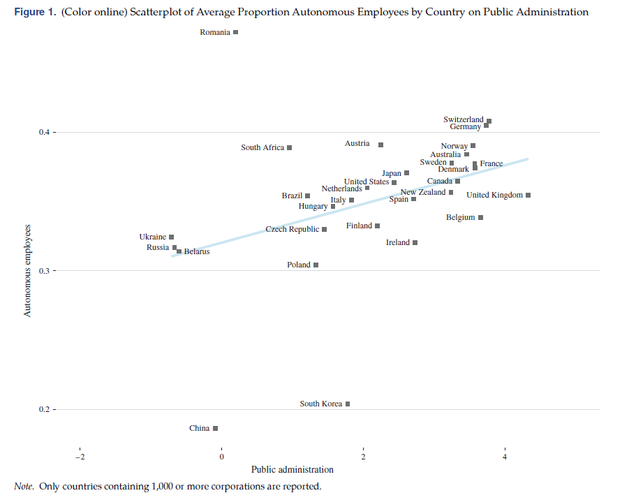
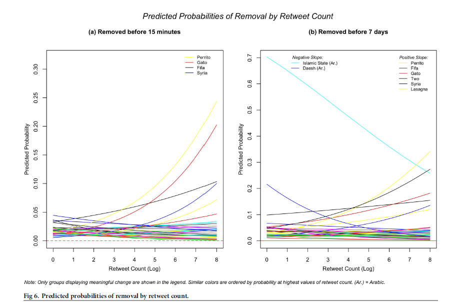
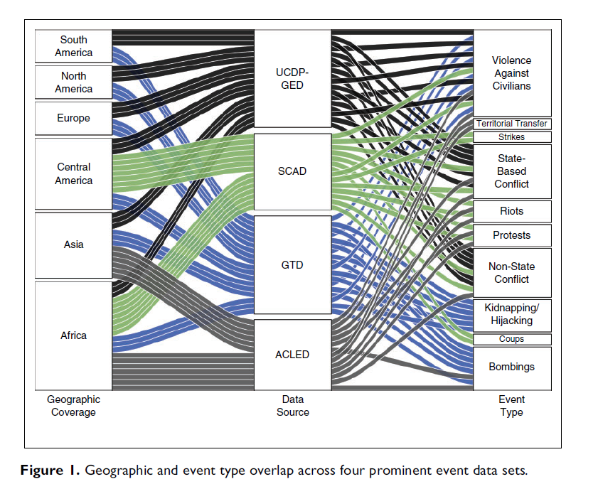
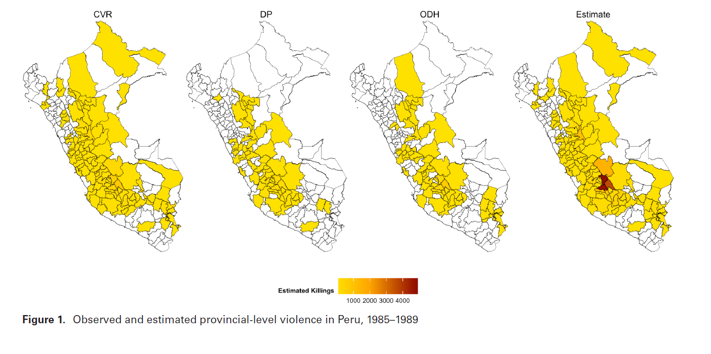
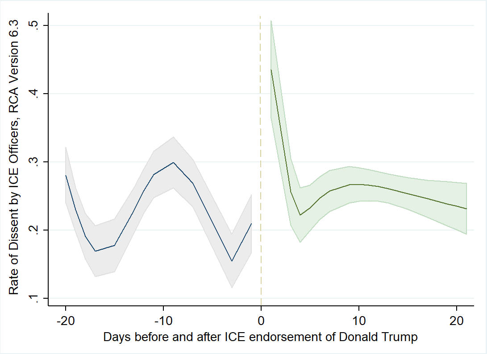

At UMD we study how social media users collectively frame political events.

Since 1985, data tracking identity group politics across the world.
What can massive multiplayer games teach us about norms and behaviour?
A space for computational social science at the UMD





